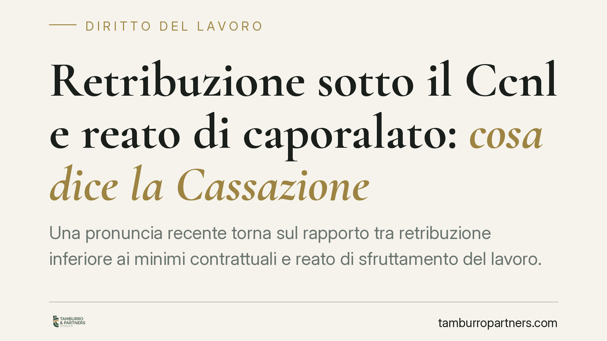

Retribuzione sotto il Ccnl e reato di caporalato: cosa dice la Cassazione
Una pronuncia recente torna sul rapporto tra retribuzione inferiore ai minimi contrattuali e reato di sfruttamento del lavoro. Il punto non è la sola paga bassa, ma l'insieme di condizioni sproporzionate unite all'approfittamento dello stato di bisogno del lavoratore. Per le imprese, in particolare nelle filiere di appalto, cambia il modo di gestire il rischio.

Il caso
La vicenda riguarda un datore di lavoro che impiegava lavoratrici straniere in condizione irregolare, corrispondendo una retribuzione inferiore a quella prevista dal contratto collettivo di categoria. La difesa sosteneva che la sola paga sotto i minimi non bastasse a configurare il reato di sfruttamento del lavoro.
La Cassazione penale, con una sentenza recente in materia, ha respinto questa lettura riduttiva. Precisiamo che, allo stato, non disponiamo dell'estremo identificativo esatto (numero e anno) della decisione: ne diamo conto come orientamento, non come precedente puntualmente citabile.
Inquadramento normativo
L'art. 603-bis del codice penale punisce lo sfruttamento del lavoro. La norma non incrimina qualunque scostamento dal contratto collettivo: richiede una combinazione tra condizioni di lavoro deteriori e approfittamento dello stato di bisogno del lavoratore.
È un chiarimento importante, spesso frainteso. L'approfittamento dello stato di bisogno non è un elemento accessorio: è l'elemento qualificante del fatto. Quando la giurisprudenza parla di dolo generico, intende la consapevolezza e la volontà di quelle condizioni e di quell'approfittamento, non l'eliminazione del requisito. In altri termini: non serve dimostrare un ulteriore fine specifico di sfruttare, ma resta necessario che il datore approfitti della debolezza del lavoratore.
Il comma 3 dell'art. 603-bis individua gli indici di sfruttamento. Tra questi: la reiterata corresponsione di retribuzioni palesemente difformi dai contratti collettivi o comunque sproporzionate rispetto a quantità e qualità del lavoro; la violazione reiterata della normativa su orario, riposi, ferie; la violazione delle norme su sicurezza e igiene; la sottoposizione a condizioni di lavoro, metodi di sorveglianza o alloggi degradanti.
La paga sotto il Ccnl, dunque, è uno degli indici, non un reato di per sé. Assume rilievo penale quando si somma agli altri e converge con l'approfittamento dello stato di bisogno.
Implicazioni pratiche
Per il datore di lavoro il messaggio è duplice.
Da un lato, non ogni scostamento dal Ccnl trasforma automaticamente un imprenditore in autore di caporalato: occorre valutare il quadro complessivo. Dall'altro, chi impiega manodopera vulnerabile, ad esempio lavoratori stranieri irregolari, opera in un contesto in cui gli indici del comma 3 tendono a cumularsi con più facilità.
Il profilo più delicato riguarda le filiere di appalto e subappalto. La responsabilità non si esaurisce nel rapporto diretto: il committente e l'appaltatore possono essere chiamati a rispondere delle condizioni praticate a valle. Il rischio penale si affianca a quello della responsabilità amministrativa degli enti ai sensi del d.lgs. 231/2001, che include i delitti di intermediazione illecita e sfruttamento del lavoro tra i reati presupposto.
Cosa fare in concreto
- Verificate la coerenza delle retribuzioni effettive con i minimi del Ccnl applicabile, per tutte le categorie impiegate, comprese quelle affidate a fornitori.
- Documentate orari, riposi, ferie e presenze con sistemi tracciabili: gli indici del comma 3 riguardano anche queste voci, non solo la paga.
- Controllate i requisiti a monte lungo la filiera: clausole contrattuali, DURC, regolarità del personale di appaltatori e subappaltatori.
- Verificate le condizioni di alloggio e sicurezza quando fornite dall'impresa, evitando situazioni riconducibili a trattamenti degradanti.
- La verifica retributiva e sugli indici di sfruttamento può essere integrata nei modelli organizzativi ex d.lgs. 231/2001, ove adottati.
Conclusione
La direzione della giurisprudenza è chiara: la retribuzione inferiore al contratto collettivo non è un dettaglio, ma un indice che, unito ad altri e all'approfittamento della vulnerabilità del lavoratore, può portare all'area del penale. La soglia decisiva resta l'approfittamento dello stato di bisogno, che qualifica il fatto e lo distingue dalla mera inadempienza contrattuale, sanzionabile su altri piani.
Per le imprese strutturate, la leva più efficace è preventiva: controllo delle condizioni retributive e organizzative, tracciabilità, presidio della filiera.
Contributo informativo a cura di Tamburro & Partners Avvocati. Non costituisce parere legale.
Ogni storia di lavoro ha i suoi tempi.
Se gestisci HR e vuoi un confronto su contenzioso, ispezioni o licenziamenti, scrivi allo studio. Ti rispondiamo entro un giorno lavorativo.